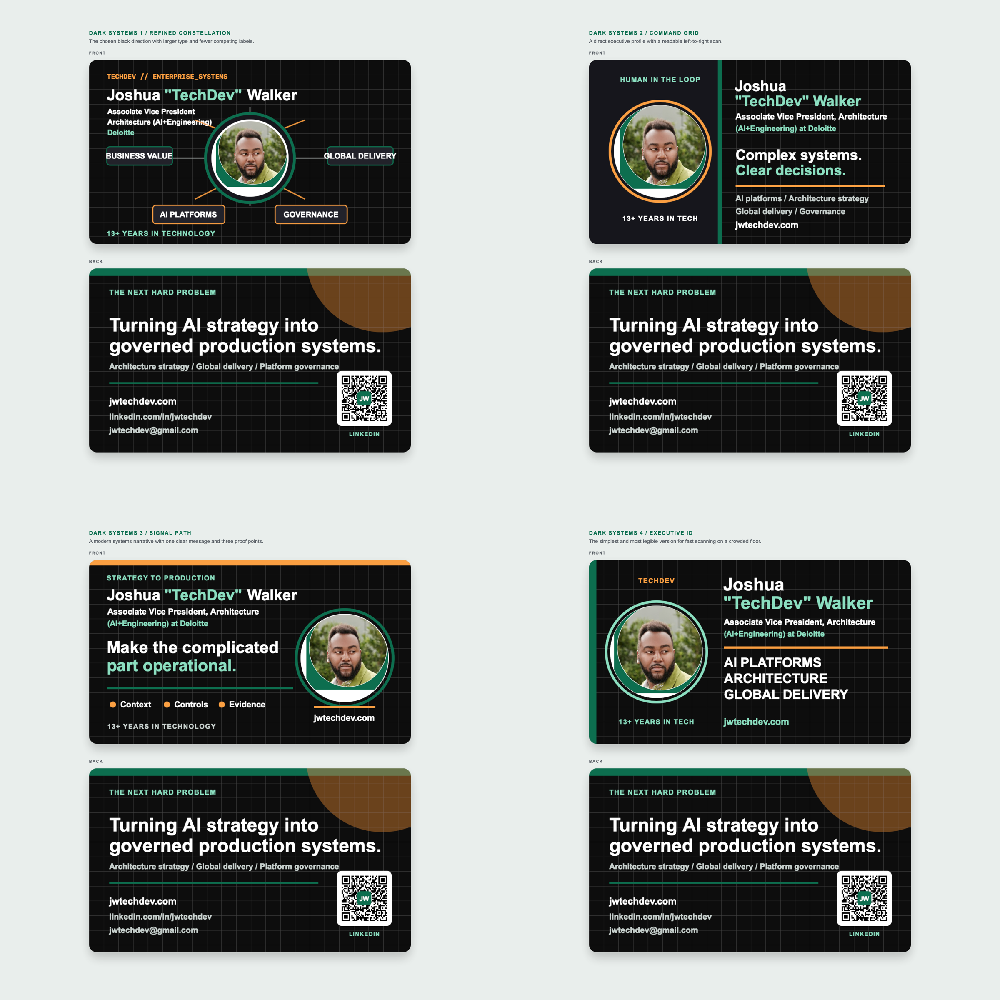

AFROTECH / DARK SYSTEMS
Four sharper versions of the black card
Each direction preserves the dark systems aesthetic while increasing print readability, simplifying the hierarchy, centering the portrait, and keeping the JWTechDev brand fonts intact.
